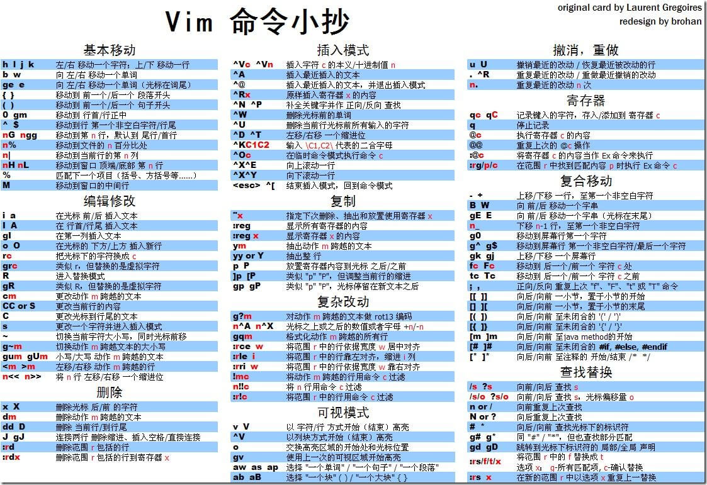

VIM
Table of Contents
vim note.
VIM
配置
window 下配置放置在 ~/_vimrc
osx 下配置放置在 ~/.vimrc
键盘映射
| Command | Normal | Visual | Operator Pending | Insert Only | Command Line |
|---|---|---|---|---|---|
| 命令 | 常规模式 | 可视化模式 | 运算符模式 | 插入模式 | 命令行模式 |
| :map | y | y | y | ||
| :nmap | y | ||||
| :vmap | y | ||||
| :omap | y | ||||
| :map! | y | y | |||
| :imap | y | ||||
| :cmap | y |
查看键盘映射,命令模式下输入
:(ivon)map
使用:map 命令，可以列出所有键盘映射。其中第一列标明了映射在哪种模式下工作：
| 标记 | 模式 |
|---|---|
| <space> | 常规模式，可视化模式，运算符模式 |
| n | 常规模式 |
| v | 可视化模式 |
| o | 运算符模式 |
| ! | 插入模式，命令行模式 |
| i | 插入模式 |
| c | 命令模式 |
命令
| 命令 | 说明 |
|---|---|
| :source ~/_vimrc | 重新加载配置 |
| :e ~/_vimrc | 打开_vimrc 文件 |
| :version | 查看 vim 相关信息，包括配置加载路径 |
| C-o | 临时进入 normal 模式 |
